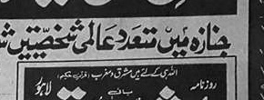
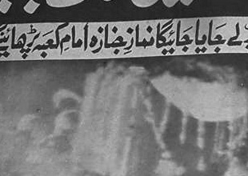

Special Coverage • National Affairs • Public Record
Front Page Reconstruction (Pre-1990 Layout) • Text Rephrased for Reference

Burial of General Zia-ul-Haq

Funeral prayers and burial rites were held under tight security, with senior officials and large public
crowds gathering to pay respects at the Faisal Mosque complex.
Funeral arrangements for General Muhammad Zia-ul-Haq were carried out in Islamabad under heavy security.
Large crowds gathered to pay their respects, while senior civil and military officials attended the rites.
The burial took place at the Faisal Mosque complex, and prayers were led in a solemn national atmosphere.
Authorities coordinated traffic movement and crowd control as delegations arrived throughout the day.
In related statements, officials urged calm and emphasized continuity in administrative functions.
Public offices remained active, while security deployments increased around key government sites.
Main Report
Nation Mourns After High-Profile Aircraft Accident
Compiled Desk Report • Reconstructed from original placement and structure
The front page reflects a moment of national uncertainty, with emphasis on legal process, public order,
and continuity of government administration.
The report describes a major national shock following a high-profile aircraft accident, highlighting
immediate uncertainty and a widespread sense of mourning. Alongside grief, the coverage points to urgent
constitutional and administrative steps needed to maintain continuity of government.
Officials are quoted describing the event as a severe loss, while the report emphasizes national unity
and calm. The paper indicates that the next steps should follow established legal procedure, and that
clear communication is essential while information continues to emerge.
Multiple short updates appear around the main narrative, mirroring the rapid pace at which details were
developing. Brief dispatches mention security coordination, official meetings, and administrative
readiness in the capital and major provinces.
Regional & International Reactions
The newspaper includes brief reactions attributed to political leaders and foreign governments. Messages
of condolence and concern appear alongside comments about stability in the region.
The tone remains formal, focusing on diplomacy and sympathy rather than speculation. Several items note
that official channels would remain open for coordination, while embassies and missions issued short
statements acknowledging the gravity of the event.
Boxed briefs summarize key remarks, reflecting a classic newspaper practice of grouping short dispatches.
The center column mirrors this structure by placing a main narrative above smaller supporting notes.
Continuity Measures And Public Guidance
Additional notes emphasize routine continuity measures: keeping public services stable, maintaining
communications, and ensuring orderly decision-making under constitutional procedures.
The paper’s layout suggests that institutions were expected to function normally while formal
announcements and confirmations were processed. Readers are directed—implicitly through the coverage—to
rely on verified statements and official updates.
Briefs
Security & Administration
Short updates mention heightened security measures and administrative coordination. The reporting frames
these steps as routine actions to protect order and ensure smooth state operations.
Brief notes reference controlled access near sensitive locations, managed traffic routes, and continued
operation of key services.
Political Developments
Another boxed report discusses immediate political discussions and meetings. It stresses that decisions
should follow the constitution and established procedures, reducing confusion in a tense moment.
Short lines indicate consultations among senior officials, with emphasis on clarity of authority and
continuity of state functions.
Public Response
Crowds gathered in large numbers, with reports describing orderly attendance and a solemn atmosphere.
Small dispatches highlight condolences, prayers, and restrained public expression.
Service Notices
Small items note schedule adjustments, traffic management, and administrative advisories issued for the
capital region during the proceedings.